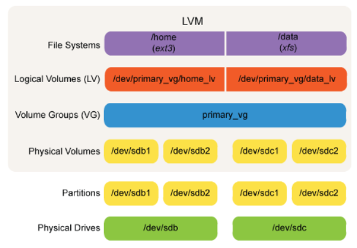

Storage
Accounting Architecture

The Storage block of accounting architecture builds on both the Hardware and Software blocks because digital storage comprises a combination of hardware and software components. The storage drives represent the storage hardware, and file and database systems represent the storage software. Together, storage hardware and software serve to operationalize the Storage step in the information life cycle.
Types of Storage Systems
- File systems store data in separate files and folders.
- Database systems store all data in a single location.
These two storage systems predate digital storage. Paper documents and folders in a filing cabinet is a physical file system, and a card catalog in a library is an example of a physical database system. The same principles apply to digital storage, and although the software portion of digital storage is the most visible from the users' perspective, the storage system begins with hardware. Digital storage hardware is analogous to the filing cabinet in a physical file system.
Physical Volumes
Digital storage begins with the storage drive. The storage drives provide the physical volumes. A physical volume is a partition, and it covers all or part of the capacity of a storage drive. Once created, the size of a partition is static. This makes file or database systems stored on physical volumes more difficult to manage because storage needs can change over time. Each storage drive with at least one partition first needs a partition table, which is a small amount of software stored on the drive to identify how many partitions the drive has, what type they are, and how large they are.

Volume Groups
Logical volumes help to overcome the rigidity of physical volumes. Logical volumes begin by combining one or more physical volumes into a volume group. Physical volumes in a volume group can come from one or more storage drives. This creates considerable flexibility in forming volume groups. They can comprise a part of one storage drive, a whole storage drive, parts of multiple storage drives, all of multiple storage drives, or all of some storage drives and some others. Volume groups are also resizable. Additional physical volumes, either additional partitions of a drive that already belongs to the volume group or an additional drive altogether, can be added to an existing volume group to increase available storage capacity.
Logical Volumes
Logical volumes function like physical volumes, except that physical volumes are formed from the storage capacity of storage drives, whereas logical volumes are formed from the storage capacity of the volume group. When creating logical volumes, the volume group makes no disctinction between the various physical volumes that make up the group. A single logical volume may be contained within a single physical volume, or it may straddle multiple physical volumes. A primary benefit of logical volumes is resizability. As long as the volume group has free space, logical volumes can expand after creation to include more storage from the volume group.
From Physical to Logical

LVM & RAID
In Linux, the tool used to create and manage logical volumes and volume groups is LVM. Another common tool is Redundant Array of Independent Disks (RAID). RAID can take on many forms, and each form has a number. RAID 0 involves combining two physical volumes into one logical volume, called a stripe. RAID is somewhat more rigid than LVM, in that the RAID number determines the exact number of physical volumes and logical volumes. Additionally, the physical volumes in a RAID are commonly entire storage drives and not partitions. Users continue to use RAID in order to allow volumes to span multiple drives, but in order to gain additional flexibility, some users place the RAID volume in a volume group and allocate the storage to logical volumes.
File Systems
The physical or logical volume is formatted with a file system. File systems provide the hierarchical folder structure common in desktop operating systems. The operating system and other applications are stored on the file system. Virtually all programs use file systems to communicate with and store data on a storage volume because of the convenience and familiarity, and interoperability of file systems. Additionally because the file system is separate from the operating system, file systems interoperable and users can remove a storage drive from one computer and access the file system from another computer.

Storage Drive to File System
From File System to Database System
The role of a database system is to collate data and present it in a centralized manner. In the example of the library card catalog, a physical database system functions as an alternative to a file system. However, in digital storage, this is not the case. A digital database system is an application, which runs on an operating system, which sits on a file system. In the current computing world, database systems are not an alternative to file systems, rather they collate data stored on a file system and present it as if it were stored in a centralized manner. Many software applications are database systems. Music players are a common example. The individual song files are stored in separate files and folders on a file system. The music player collates the songs and provides the user with a single library.
Flat File Databases
The simplest databases are flat files. A flat file database is a single file that contains only data with each row representing a single record. Spreadsheets and comma- or tab-delimited files (CSV or TXT) are examples of flat files. In flat file databases, all data is stored in a single table. These are popular for storing small datasets because they place no restrictions on the form of the data. As a result, adding additional records tends to be quick and easy. Additionally, many users are familiar with applications that read flat files, such as Microsoft Excel. The largest drawback of flat files is an inability to create relationships between data in different tables. Additionally, flat file databases have none of the functionality necessary to support data integrity in a large-scale enterprise-grade information system.
Relational Databases
Many database systems for storing business data are relational databases. Each relational database contains one of more two-dimensional tables. The technical name for a table is a relation, hence relational database. These tables are similar to spreadsheets found in office software.
The individual rows in the relations are called records or tuples. The individual columns are called attributes or fields. The intersection of a row and a column is a cell. Cells hold a single value.
Database Components
In a relational database, each table or relation represents an entity, which is either a person (e.g., Customer or Employee), an asset (e.g., Inventory) or a data object (e.g., Invoice). Rows or records represent instances of an entity (e.g., a specific customer or a specific invoice). Columns or attributes represent characteristics of an entity (e.g., customer name or inventory SKU). Cells represent characteristics of an instance (e.g., the address of a specific employee or the date on a specific invoice).This structure is no different from the structure of a flat file database. However, the strength of a relational database is in the relationships between the database tables. Relationships between tables represent interactions between entities. The relational database model stores data by entity while relating it to data from other entities.
Primary Keys
Each record in a table must have a unique identifier. Without it, it would not be possible to locate and retrieve a specific instance of an entity. This unique identifier is a primary key. Frequently, a primary key is a single entity attribute. It may be a characteristic inherent to an entity (e.g., telephone number, user login, SSN, etc.), or it may simply be an incremented ID number (e.g., 00001, 00002, 00003, etc.). As a unique identifier, each value of a primary key can only occur once per table. Sometimes no single attribute uniquely identifies an instance of an entity. For example, neither Semester nor Year nor Course Name nor Section uniquely identify an instance of a course, but the combination of Semester and Year and Course Name and Section can. Primary keys that comprise multiple attributes are composite keys.
Data Types
All cells for a single attribute must have the same data type. This type determines the characteristics of the data, as well as any available operations.
Numerical data types support arithmetic and statistical functions, such as addition, subtraction, and average. String data types support pattern matching. Date types and numerical types both support comparisons (e.g., greater than or less than).
Structure Models
- Activity models describe a series of processes that comprise a system.
- Structure models describe the characteristics of people, assets, and data and their relationships with one another.
Designing a relational database involves identifying all relevant entities, their attributes, and the relationships between those entities. Activity diagrams of business processes are useful for identifying people, assets, and data objects that become entities. Entities are the foundation for a structural model of a relational database that stores instances and attributes of these entities. A structural model shows how entities relate to one another.
Entity-Relationship Diagrams
The entity-relationship (E-R) diagram is the standard for modeling relational databases. Multiple E-R diagramming conventions exist that present the same data in different ways. The primary components of an E-R diagram are database entities and the relationships between them. A relationship is a link between entities that can be described as a verb of one entity acting on another (e.g., Customer Has Account or Employee Creates Receiving Report). E-R diagrams can also portray the attributes of each entity.

Foreign Keys
Because primary keys uniquely identify an instance of an entity, they also serve to link entities together to implement relationships. Creating a relationship between two tables in a relational database involves taking the primary key from the table that represents the acting entity and placing it in the table that represents the entity being acted upon as a foreign key. A foreign key is a special attribute that can only take values of the primary key it links to, in order to show which instance of one entity relates to which instance of another. For example, Employee might include Employee ID as a primary key, and Sales Order could include Employee ID as a foreign key to identify the employee who initiated the sales order.
Cardinalities
The magnitude of the potential relationships between an instance of one entity and the instances of another is cardinality. Cardinalities have three potential values: zero, one, and many. Cardinalities also have two bounds: minimum and maximum. Minimum cardinalities can be either zero or one, and they demonstrate that an instance of one entity is associated with at least zero instances or at least one instance of another entity . Maximum cardinalities can be either one or many, and they demonstrate that an instance of one entity is associated with at most one instance or at most many instances of another entity. For example, a customer is associated with at least (minimum) one and at most (maximum) many sales, and each sale is associated with at least one and at most one customer.
Sample E-R Diagram
This E-R diagram shows entities with attributes and relationships with cardinalities. Each course in the catalog has a unique number and each faculty member a unique ID as primary key [PK]. These primary keys link faculty and catalog entries to specific courses in the schedule through foreign keys [FK]. Schedule has a composite key, so course number is both a primary and a foreign key [PK/FK]. Faculty can teach at least zero and at most many scheduled courses, and each catalog entry can be scheduled at least zero and at most many times. Each scheduled course has at least one and at most one instructor and at least one and at most one catalog reference.
Exceptions to Entities and Attributes
Not every important object is an entity, and not every relevant characteristic is an attribute. The exceptions to this rule are objects and characteristics that are combinations of existing instances or attributes. Combinations of existing attributes are usually calculations. For example, the Inventory entity would have Unit Cost and Quantity On Hand as attributes. Total Cost would not be an attribute because it is a combination of other attributes (Unit Cost × Quantity on Hand). Combinations of existing instances are often subsets or alternative representations of entities. For example, Supervisor would not be an entity because it would simply be a subset of the Employee entity. These objects and characteristics become user views because they are not stored in the database but can be provided to the user, as needed.
Accounting Records
Traditional accounting journals and ledgers are examples of user views. Financial accounting textbooks imply that transaction processing involves recording a journal entry and then posting the journal entry to a ledger. However, in a relational database, Journal and Ledger could not both be entities because they represent alternative representations of the same instances. Furthermore, in a database with tables to track different types of assets (e.g., inventory, receivables, fixed assets) and financial transactions (e.g., sales, purchases, cash payments, cash receipts), either a Journal entity or a Ledger entity would be a combination of instances from asset and transaction entities. Journals, ledgers, and financial statements are not storage objects. They are user views sorted by date, account, financial statement, etc.
Non-relational Databases
For several decades, RDBMSs have been the data store of choice for business data. However, Web commerce has created the need for database solutions that can add data quickly and can increase in size to accommodate very large datasets. These solutions fall into a class of non-relational databases, also called NoSQL. These databases abandon the principles of relational databases in favor of alternative models. Many NoSQL databases are key-value stores.
A key-value store pairs unique keys with data objects. The data object can be anything from a single number to an entire file. The role of the key-value store is to facilitate efficient storing and retrieval of values (i.e., data objects) by their keys. Two common types of key-value stores are document stores and column stores.
Document Store
A document store is a key-value store in which the data object is a text file with multiple metadata attributes and values, frequently in XML, YAML, or JavaScript Object Notation (JSON) format. Instead of storing the individual values as fields in a record of a relational table, a document store keeps all values together in a single data object.
Column Store
A column store groups individual key and values into columns and then combines columns into families. A column is similar to an attribute, and a family is similar to a record. Unlike records in relational tables, different families can have different numbers of keys (i.e., attributes), and the value from the same key in different family can have a different data type.
Graph Database
With the advent of social media, graph databases have become a popular NoSQL model. A graph database uses nodes, edges, and properties to emphasize the relationships between objects. Each node is an object with one or more attributes similar to a row in a relational database. Edges connect nodes to describe how nodes relate to one another. Graph databases are similar to relational databases, but the emphasis is on the relationships.

Benefits of NoSQL Databases
- Volume: Because of the simplicity of each record in the database, NoSQL databases are designed to store many more records than their relational counterparts.
- Velocity: Relational databases must find each field, perhaps across multiple tables, to add and retrieve records. NoSQL databases take the data input and simply append it to the end of the store.
- Variety: Unlike relational databases which primarily store simple data types, NoSQL databases can store any data object. As a result, they are useful for pairing metadata with supporting documentation (e.g., invoice information with a scanned image of the original paper invoice).
Just So Fresh And Clean
Accountants have a long tradition of storing economic data in paper journals and ledgers. Databases have replaced paper journals and ledgers, but databases are more than digital ledgers. Flat file databases are popular because of their ease of use, but they have drawbacks over relational and NoSQL databases. Relational databases promote data integrity by grouping data by entity and by requiring attributes to have a uniform data type. Clean data from well-designed relational databases results in better analytics. NoSQL databases promote eCommerce and Big Data analytics by storing and retrieving larger datasets faster. Proper storage solutions are necessary for data retrieval and analysis that results in reports for internal and external stakeholders that effectively support strategic decision making.
Appendix:
Linux Storage Commands
Navigation Command
- cd / (Navigate to top-level folder, called root)
- cd /home (Navigate to home folder in root folder)
- cd /var/www (Navigate to www folder in var folder in root folder)
- cd Documents (Navigate to Documents folder in current folder)
- cd Music/Playlists (Navigate to Playlists folder in Music folder in current folder)
- cd .. (Navigate to parent folder)
- cd ~ (Navigate to user's home folder)
(NB: In Linux, file and folder names are case sensitive.)
Creation Commands
- touch test.txt (Create test.txt in current folder owned by user)
- sudo touch /test.txt (Create test.txt in root folder not owned by user)
- touch Downloads/test.txt (Create test.txt in Downloads folder owned by user in current folder)
- sudo touch /opt/test.txt (Create test.txt in opt folder not owned by user in root folder)
- mkdir Documents (Create Documents folder in current folder owned by user)
- mkdir Videos/playlist (Create folder playlist in Video folder owned by user in current folder)
- sudo mkdir /bin/test (Create test folder in bin folder not owned by user in root folder)
Data Output Commands
- ls (List contents of current folder)
- ls /etc (List contents of etc folder in root folder)
- ls Desktop/storage (List contents of storage folder Desktop folder in current folder)
- echo "Linux is great!" (Print Linux is great! to terminal)
- cat test.txt (Print contents of test.txt in current folder to terminal window)
- cat /etc/smb.conf (Print contents of smb.conf in etc folder in root folder to terminal window)
- cat /etc/smb.conf (Print contents of smb.conf in etc folder in root folder to terminal window)
- cat test.txt >> Downloads/test2.txt (Append contents of test2.txt in Downloads folder in current folder with contents of test.txt in current folder)
Move/Rename Command
- mv test.txt test2.txt (Rename test.txt owned by user in current folder owned by user to test2.txt)
- mv test.txt Documents/. (Move test.txt owned by user in current folder to Documents folder owned by user in current folder)
- sudo mv test.txt /. (Move test.txt in current folder to root folder not owned by user)
- mv Documents/* Downloads/. (Move contents of Documents folder owned by user in current folder to Downloads folder owned by user in current folder)
- sudo mv /etc /etc_bak (Rename etc folder not owned by user in root folder not owned by user to etc_bak in root folder not owned by user)
- mv Music Downloads/mymusic (Move Music folder owned by user in current folder to Downloads folder owned by user in current folder and rename to mymusic)
Copy Command
- cp test.txt test2.txt (Copy test.txt in current folder to current folder owned by user and name test2.txt)
- cp test.txt Documents/. (Copy test.txt in current folder to Documents folder owned by user in current folder)
- sudo cp test.txt /. (Copy test.txt in current folder to root folder not owned by user)
- cp Documents/* Downloads/. (Copy contents of Documents folder in current folder to Downloads folder owned by user in current folder)
- cp -r Documents Downloads/. (Copy Documents folder in current folder to Downloads folder owned by user in current folder)
- sudo cp -r /etc /etc_bak (Copy etc folder in root folder to root folder not owned by user and name etc_bak)
- cp -r Music /var/mymusic (Copy Music folder in current folder to var folder not owned by user in root folder and name mymusic)
Delete Command
- rm test.txt (Delete test.txt in current folder owned by user)
- rm Documents/test.txt (Delete test.txt owned by user in Documents folder in current folder)
- sudo rm /etc/test.txt (Delete test.txt not owned by user in etc folder in root folder)
- rm -rf Downloads/. (Delete Downloads folder and all of its contents owned by user in current folder)
- rm -rf Music/playlist (Delete playlist folder and all of its contents owned by user in Music folder in current folder)
- sudo rm -rf /opt/test (Delete test folder and all of its contents not owned by user in opt folder in root folder)
- sudo rm -rf / (Delete root folder and all of its contents not owned by user; this command should never be run as it will delete everything on the file system)
More UNIX Philosophy
- ls > output.txt (Pass the output from ls to file output.txt)
- cat test.txt > test2.txt (Pass the output from printing file test.txt to file test2.txt)
- echo "Testing..." > test.txt (Pass the string Testing... to file test.txt)
- cat < test.txt (Pass the contents of file test.txt to cat)
- ls >> output.txt (Pass the output from ls to file output.txt)
- echo "Testing..." >> test.txt (Pass the string Testing... to file test.txt)
- cat test.txt >> test2.txt (Pass the output from printing file test.txt to file test2.txt)